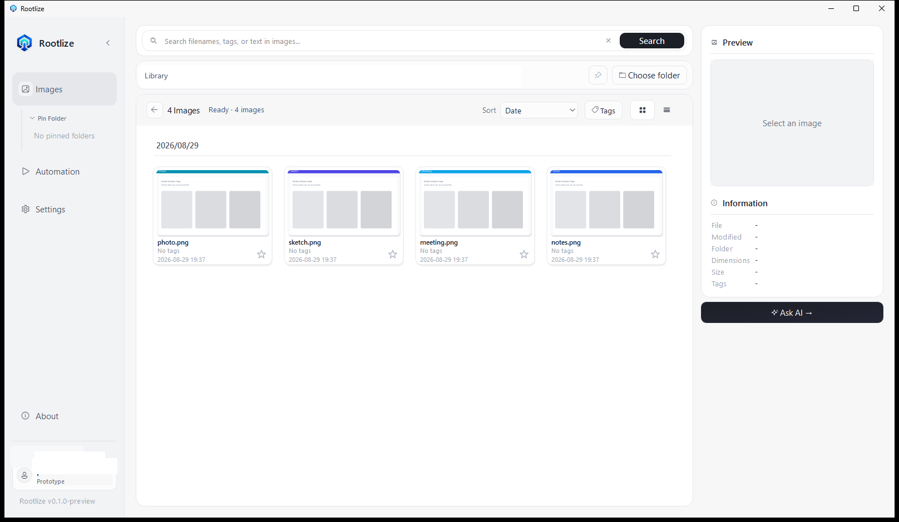

When the folder is not enough
- You remember the image, but not its filename.
- A useful reference vanishes into another crowded folder.
- You dig through files while a task or conversation waits.
- You give up, recapture it, or lose the idea completely.
Prototype Preview
Your Local Workspace.
Find, organize, and work with the images on your PC — without moving them to the cloud.
Sign in to start · Use folders you already have · Images stay on your PC

The moment that matters
The files are already on your PC. Rootlize is the workspace that lets you find them, narrow the set, act on them, and repeat the work — without moving the library to the cloud.
Point Rootlize at an existing local folder. Search, preview, organize, and automate there. Your images stay on this PC — Rootlize does not move the library into a Rootlize cloud.
Sign in to start. Local search stays on this PC. Ask AI needs the internet after you agree.
How the workspace works
Rootlize is not only an image search box. It is a local workspace for files that already live on your PC.
Basic Search uses filename, tags, and text found in images. Meaning Search finds images by what they show. The Meaning Search model ships with the app — no extra model setup.
Browse the set visually, preview the ones that matter, and keep working in the same folder. You are not copying the library somewhere else first.
Organize in place: rename, tag, favorite, or move files. Use Ask AI when you want to describe the work in your own words. Ask AI needs sign-in and the internet.
Save a repeated find-and-organize flow as Automation, then run it again on the same kind of local folder work.
On your PC
Rootlize does not turn your image library into a cloud library. Some features still need an account and the internet.
Your images remain in the folders you choose. Basic Search, OCR, and bundled Meaning Search run locally. Sign-in does not upload the library.
The Prototype opens on a sign-in screen. Account restore and Ask AI use online services after you agree. Ask AI may send image contents to an external AI service.
See it in action
See how Rootlize works with the folders you already have. Select any screen to view it at full size.
Coming later
Planned directions — not available in the current preview.
Start with the folder you have
Find, organize, and work with the images on your PC — without moving them to the cloud.
Prototype Preview
Version 0.1.0-preview
Unsigned Prototype Preview. Windows SmartScreen may show a warning — only continue if you trust this GitHub Release. Meaning Search is bundled; you do not download a separate model.
Questions
Common questions about privacy, sign-in, and what runs locally.
Early preview
Rootlize is currently in an early preview. I'm actively improving it based on user feedback.
I'd especially love feedback about: